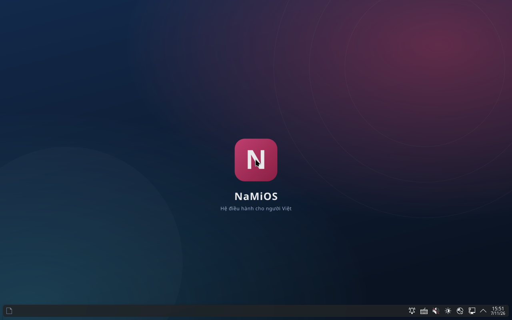
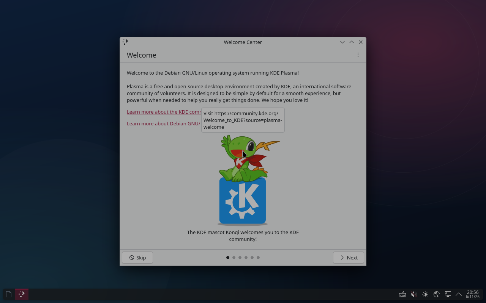
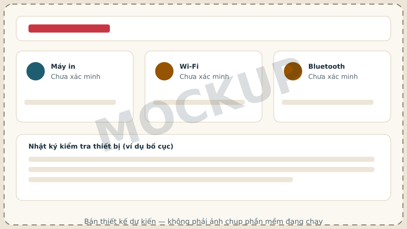
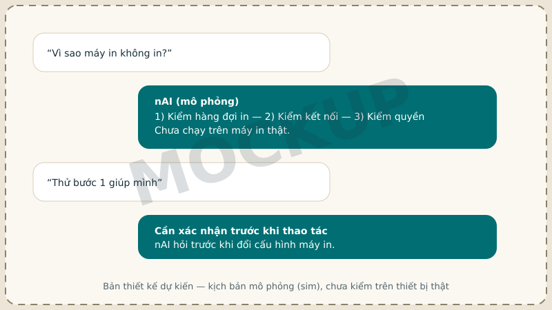

NaMiOS. Gần gũi để bắt đầu. Đủ mạnh để làm việc.
NaMiOS kết hợp giao diện tiếng Việt, NaMiOffice, bộ gõ, trình duyệt, cập nhật và trợ lý SmartAI. Kiểm tra khả năng chạy ứng dụng và thiết bị của bạn trước khi cài — và xem rõ cái gì đã kiểm thử, cái gì còn đang phát triển.

Vì sao tin tưởng trang này
Không có nút tải giả
Khi chưa có ISO được phê duyệt, trang này không hiển thị nút "Tải xuống" — chỉ có đăng ký nhận tin và trang tiến độ.
Mỗi claim có bằng chứng
Mọi mục "đã có"/"đã thử" đọc trực tiếp từ release manifest và ma trận tương thích, không phải do biên tập tự viết.
Ảnh thật hoặc ghi nhãn rõ
Ảnh sản phẩm là ảnh chụp build chạy thật trong QEMU, hoặc ghi nhãn "bản thiết kế dự kiến (mockup)" khi chưa có giao diện thật.
Thói quen quen thuộc
Desktop, thanh tác vụ, menu ứng dụng — không phải học lại từ đầu
NaMiOS dùng môi trường desktop KDE Plasma với taskbar, menu ứng dụng, cửa sổ kéo thả và phím tắt theo thói quen phổ biến. Đây là cách gợi sự quen thuộc, không phải sao chép nguyên pixel giao diện của hệ điều hành khác.

Desktop KDE Plasma khởi động tới màn hình nền thật trong QEMU — không phải dàn dựng hay ảnh ghép.
Trải nghiệm trên phần cứng pilot thật (bàn phím, chuột, cảm ứng, đa màn hình) chưa được đo — xem báo cáo khả thi G0 trong kho mã nguồn.
Sẵn từ ngày đầu
Bộ công cụ thiết yếu, tiếng Việt
Mỗi thẻ dưới đây có nhãn trạng thái thật, lấy từ ma trận tương thích — không phải mọi thứ đều đã "cài sẵn và chạy ổn" dù đã có trong hệ thống.
NaMiOffice
Làm việc quen tay với NaMiOffice
Soạn văn bản, bảng tính và bài trình chiếu trên NaMiOS bằng NaMiWriter, NaMiSheet, NaMiSlides (dựa trên lõi LibreOffice, giấy phép MPL-2.0). Mở và lưu các định dạng phổ biến; với tệp có macro, biểu đồ hoặc công thức phức tạp, NaMiOffice sẽ báo mức hỗ trợ trước khi bạn lưu.
Độ trung thực DOCX/XLSX mới đo trên fixture nội bộ, chưa đo trên file thật hay thiết bị pilot. NaMiOffice không hỗ trợ VBA/macro của Microsoft.
Thiết bị quanh bạn
Kết nối dễ hiểu
Tìm máy in, máy quét, Wi-Fi và Bluetooth trong một nơi. NaMiOS báo cụ thể khâu nào đang gặp lỗi và gợi ý bước xử lý. Xem danh sách lớp thiết bị và chức năng đã/chưa kiểm thử trước khi chuyển máy — một máy in đa năng có thể "in đạt, quét chưa thử", không dùng một dấu tick cho toàn bộ model.

Phần mềm Windows
Ứng dụng thường dùng, đúng cách
Zalo, YouTube, Maps, Facebook, TikTok và WhatsApp được mở qua dịch vụ web chính thức khi có trong bản cài; đăng nhập do nhà cung cấp quản lý. Các tính năng của bản desktop Windows chỉ được công bố sau khi kiểm thử qua Wine — hiện tại chưa có bộ kiểm thử Wine nào chạy được trên môi trường build của dự án.
- Linux native — cài sẵn, chạy trực tiếp, không cần lớp tương thích.
- Web chính thức — mở trong trình duyệt, cần Internet và tài khoản của nhà cung cấp.
- Wine đã kiểm chứng — phần mềm Windows chạy qua lớp tương thích, chỉ công bố sau khi có bằng chứng kiểm thật (hiện chưa có ví dụ nào ở trạng thái này).
- Môi trường Windows có giấy phép — dùng khi phần mềm chuyên ngành chưa thể chạy qua ba lớp trên.
SmartAI
Trợ lý hiểu máy, hỏi trước khi làm
Ví dụ: "Vì sao máy in không in?" → SmartAI phân tích hàng đợi, kết nối, quyền → gợi ý các bước xử lý, và hỏi xác nhận trước khi đổi bất kỳ cấu hình nào. SmartAI không tự sửa mọi ứng dụng và không tự nhận "đã xong" khi chưa có bằng chứng.

Kịch bản này hiện mới kiểm ở mức mô phỏng (sim) — lệnh hệ thống thật được thay bằng bin giả để kiểm logic, chưa chạy trên máy/thiết bị thật.
An toàn và cập nhật
Cập nhật có kiểm soát, có đường lùi
Chuỗi cập nhật được thiết kế theo nguyên tắc fail-closed: gói giả chữ ký, hash sai hoặc metadata hết hạn đều bị chặn; nếu một bản nâng cấp làm hỏng máy, hệ thống quay lại bản trước thay vì để máy không khởi động được. Khóa ký hiện tại là khóa kiểm thử (TEST-ONLY), dự án chưa có hạ tầng khóa phát hành production.
Cho Việt Nam
Tiếng Việt mặc định, từ bàn phím tới hóa đơn
Gõ Telex/VNI, định dạng ngày dd/MM/yyyy, số theo VND, mẫu tài liệu hành chính và bài giảng. Hình nền và hình minh họa phong cảnh Việt Nam chỉ dùng ảnh có nguồn và quyền sử dụng rõ ràng; bản đồ chủ quyền chỉ dùng nguồn địa lý chính thức, không tạo bằng AI.
Kiểm tra máy của bạn
Tra cứu ứng dụng và thiết bị bạn đang dùng trước khi quyết định thử NaMiOS.